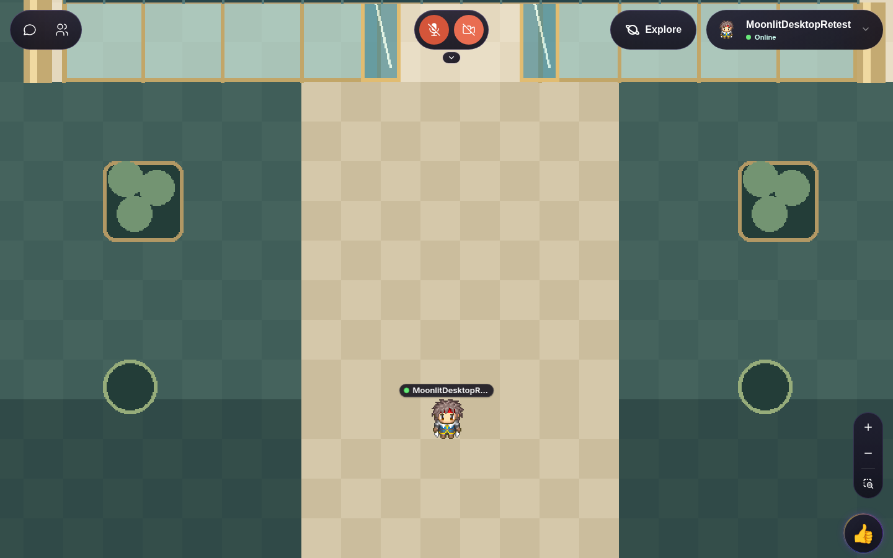
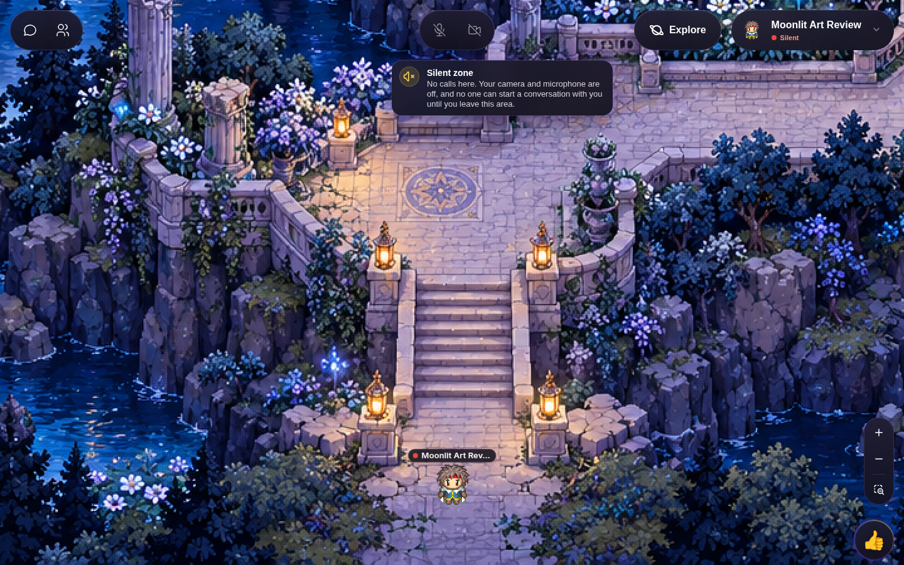
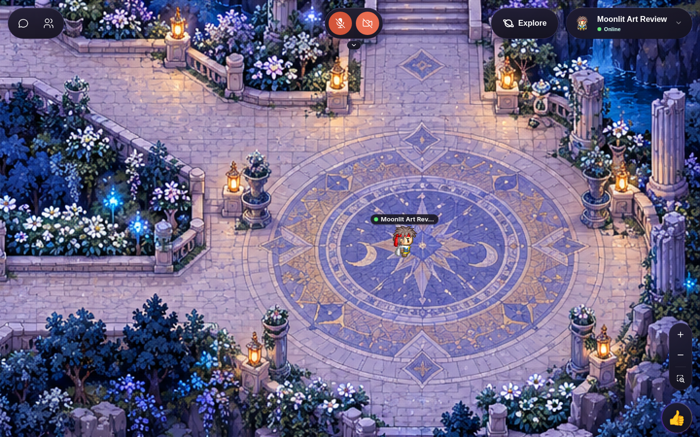
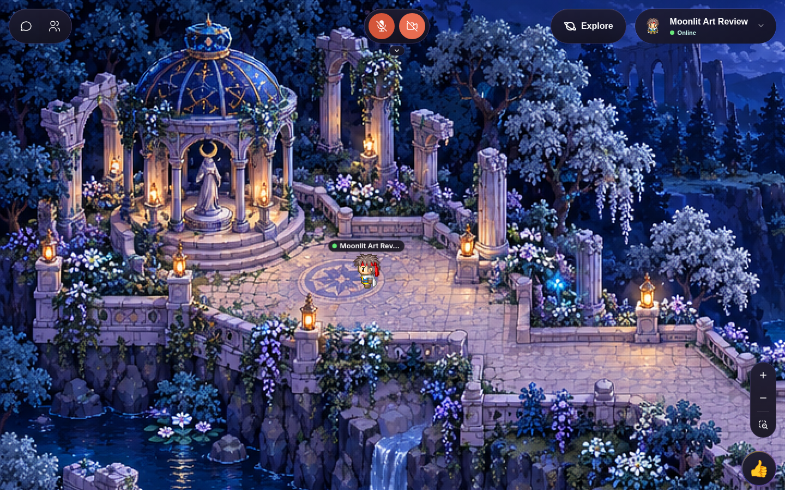

Actual 1440×900 game captures with a normal Woka. The candidate reuses original Moonlit artwork unchanged. It is unpublished. Roof/glass/door/interior and tea-station integration are withheld because the required separable artwork is missing.

Before: saved r4 gameplay arrival. Repeating checkerboard, empty broad path and placeholder plants dominate the view.

After: candidate arrival captured in the local game. Stone stairs, lanterns, cliff faces, water and planting establish depth and a readable route. Silent-spawn notice is actual game UI.

After: mosaic court reached through native pathfinding. Open gathering space has a deliberate focal point and framed edges rather than empty tiles.

After: gazebo approach reached on foot. Existing shrine and statue are retained. This is not a completed teahouse interior.
Artwork pixels are not edited or generated. Original scene and r4 remain untouched. The Library upload failed; these files are local deliverables.